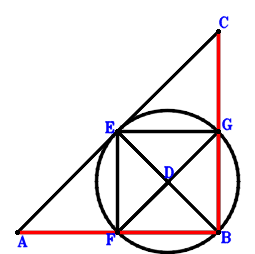
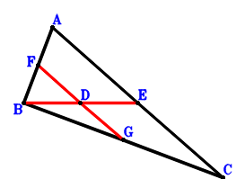
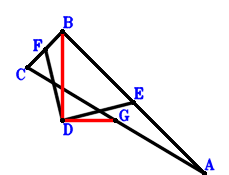

Exercise 3： Let EFBG be a cyclic quadrilateral, FG intersects EB at D. F, E, G are the midpoints of AB, AC, CB, respectively. Prove that AB⊥BC.

\(\because \) E is the midpoint of AC \(\therefore \small\overrightarrow{BE}=\dfrac{\small\overrightarrow{BA}}{2} + \dfrac{\small\overrightarrow{BC}}{2}\).\(\because \) F is the midpoint of AB \(\therefore \small\overrightarrow{BF}=\dfrac{\small\overrightarrow{BA}}{2}\).\(\because \) G is the midpoint of CB \(\therefore \small\overrightarrow{BG}=\dfrac{\small\overrightarrow{BC}}{2}\).\(\because \) EFBG is a cyclic quadrilateral, FG intersects EB at D \( \therefore\small\overrightarrow{BD} \cdot \small\overrightarrow{ED} - \small\overrightarrow{FD} \cdot \small\overrightarrow{GD}=\small\overrightarrow{BD} \cdot \left(\small\overrightarrow{BD} - \small\overrightarrow{BE}\right) - \left(\small\overrightarrow{BD} - \small\overrightarrow{BF}\right) \cdot \left(\small\overrightarrow{BD} - \small\overrightarrow{BG}\right)=\small\overrightarrow{BD} \cdot \left(- \dfrac{\small\overrightarrow{BA}}{2} - \dfrac{\small\overrightarrow{BC}}{2} + \small\overrightarrow{BD}\right) - \left(- \dfrac{\small\overrightarrow{BA}}{2} + \small\overrightarrow{BD}\right) \cdot \left(- \dfrac{\small\overrightarrow{BC}}{2} + \small\overrightarrow{BD}\right)=- \dfrac{\small\overrightarrow{BA} \cdot \small\overrightarrow{BC}}{4}=0.\)In conclusion, \(\small\overrightarrow{BA} \cdot \small\overrightarrow{BC}=0\), that is, AB⊥BC.
Exercise 4： Let F, E, G be the midpoints of AB, AC, CB, respectively. AB⊥BC. Given that E, D, B are collinear and F, D, G are collinear, prove that ED\(\cdot\)DB=FD\(\cdot\)DG.

\(\because \) E is the midpoint of AC \(\therefore \small\overrightarrow{BE}=\dfrac{\small\overrightarrow{BA}}{2} + \dfrac{\small\overrightarrow{BC}}{2}\).\(\because \) F is the midpoint of AB \(\therefore \small\overrightarrow{BF}=\dfrac{\small\overrightarrow{BA}}{2}\).\(\because \) G is the midpoint of CB \(\therefore \small\overrightarrow{BG}=\dfrac{\small\overrightarrow{BC}}{2}\).\(\because \) AB⊥BC \( \therefore\small\overrightarrow{BA} \cdot \small\overrightarrow{BC}=0.\)In conclusion, \(- \small\overrightarrow{BD} \cdot \small\overrightarrow{ED} + \small\overrightarrow{FD} \cdot \small\overrightarrow{GD}=- \small\overrightarrow{BD} \cdot \left(\small\overrightarrow{BD} - \small\overrightarrow{BE}\right) + \left(\small\overrightarrow{BD} - \small\overrightarrow{BF}\right) \cdot \left(\small\overrightarrow{BD} - \small\overrightarrow{BG}\right)=- \small\overrightarrow{BD} \cdot \left(- \dfrac{\small\overrightarrow{BA}}{2} - \dfrac{\small\overrightarrow{BC}}{2} + \small\overrightarrow{BD}\right) + \left(- \dfrac{\small\overrightarrow{BA}}{2} + \small\overrightarrow{BD}\right) \cdot \left(- \dfrac{\small\overrightarrow{BC}}{2} + \small\overrightarrow{BD}\right)=\dfrac{\small\overrightarrow{BA} \cdot \small\overrightarrow{BC}}{4}=0\)\(\because\) E, D, B are collinear and F, D, G are collinear \(\therefore\) ED\(\cdot\)DB=FD\(\cdot\)DG.
Exercise 5： Let G, F, E be the midpoints of AC, CB, AB, respectively. ED⊥DF and AB⊥BC. Prove that GD⊥DB.

\(\because \) E is the midpoint of AB \(\therefore \small\overrightarrow{BE}=\dfrac{\small\overrightarrow{BA}}{2}\).\(\because \) F is the midpoint of CB \(\therefore \small\overrightarrow{BF}=\dfrac{\small\overrightarrow{BC}}{2}\).\(\because \) G is the midpoint of AC \(\therefore \small\overrightarrow{BG}=\dfrac{\small\overrightarrow{BA}}{2} + \dfrac{\small\overrightarrow{BC}}{2}\).\(\because \) ED⊥DF \(\therefore \small\overrightarrow{ED} \cdot \small\overrightarrow{FD}=\left(\small\overrightarrow{BD} - \small\overrightarrow{BE}\right) \cdot \left(\small\overrightarrow{BD} - \small\overrightarrow{BF}\right)=\left(- \dfrac{\small\overrightarrow{BA}}{2} + \small\overrightarrow{BD}\right) \cdot \left(- \dfrac{\small\overrightarrow{BC}}{2} + \small\overrightarrow{BD}\right)=\dfrac{\small\overrightarrow{BA} \cdot \small\overrightarrow{BC}}{4} - \dfrac{\small\overrightarrow{BA} \cdot \small\overrightarrow{BD}}{2} - \dfrac{\small\overrightarrow{BC} \cdot \small\overrightarrow{BD}}{2} + \small\overrightarrow{BD}^{2}=0\) . . . . . . \(①\)\(\because \) AB⊥BC \(\therefore \small\overrightarrow{BA} \cdot \small\overrightarrow{BC}=0\) . . . . . . \(②\)In conclusion, \(\small\overrightarrow{BD} \cdot \small\overrightarrow{GD}=\small\overrightarrow{BD} \cdot \left(\small\overrightarrow{BD} - \small\overrightarrow{BG}\right)=\small\overrightarrow{BD} \cdot \left(- \dfrac{\small\overrightarrow{BA}}{2} - \dfrac{\small\overrightarrow{BC}}{2} + \small\overrightarrow{BD}\right)=- \dfrac{\small\overrightarrow{BA} \cdot \small\overrightarrow{BD}}{2} - \dfrac{\small\overrightarrow{BC} \cdot \small\overrightarrow{BD}}{2} + \small\overrightarrow{BD}^{2}=①-1/4\cdot②=0\), that is, GD⊥DB.